I’ve always been a Soul and R&B guy at heart, and it’s been a lifelong dream of mine to start a band that showcases my love for that music. In the spring of 2024, that dream came to life when I formed The Sweet Spots with friends from the Cal Poly Jazz Program who shared the same passion and drive. I play bass and share vocal duties in the group, and together we’ve been bringing our blend of Soul, R&B, and Funk to stages across the Central Coast.
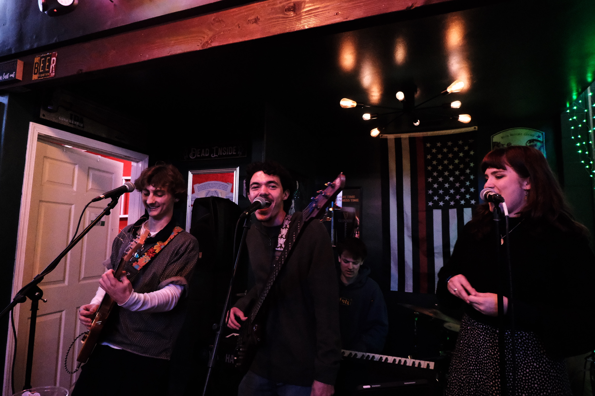
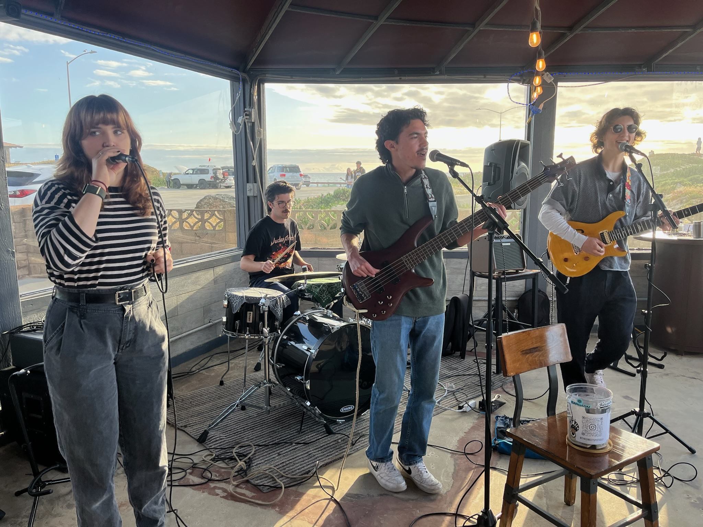

 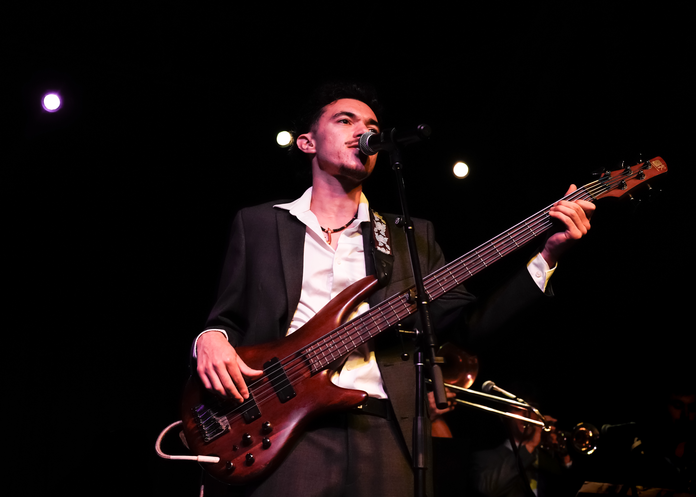
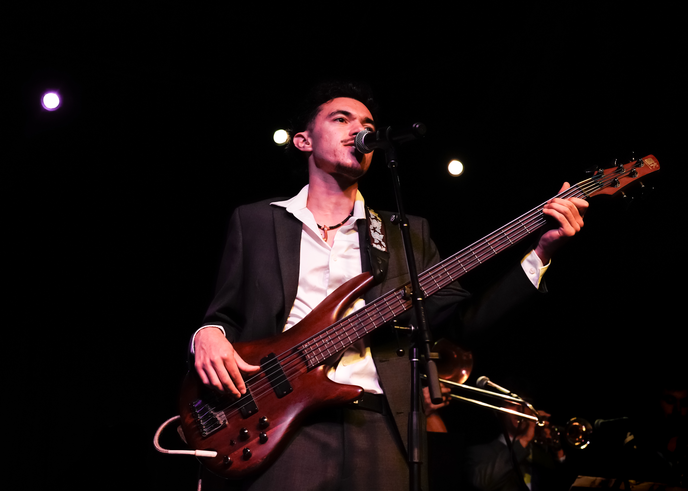
 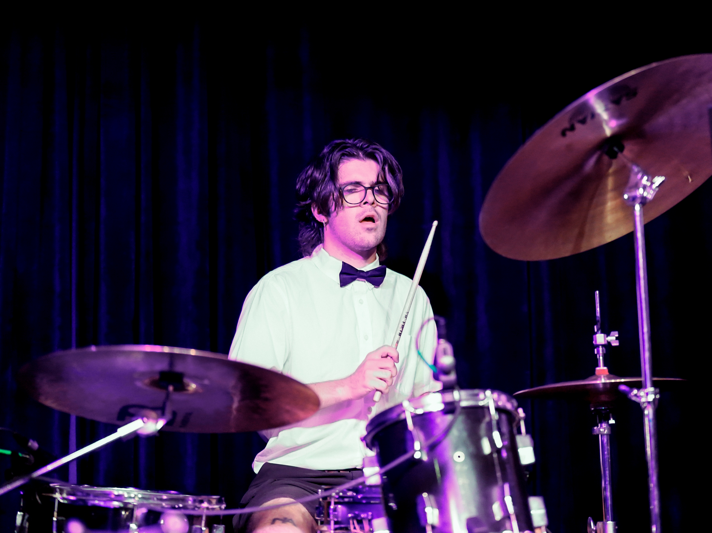
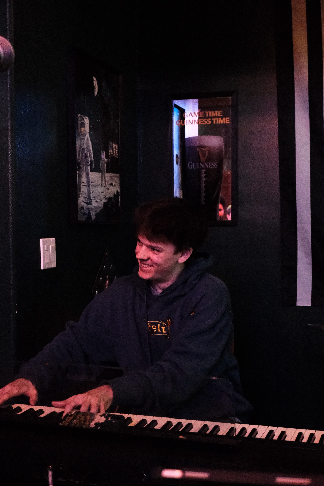
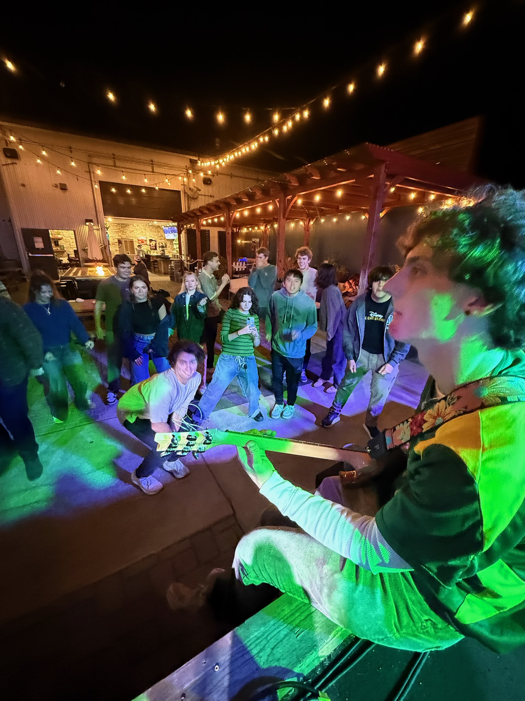
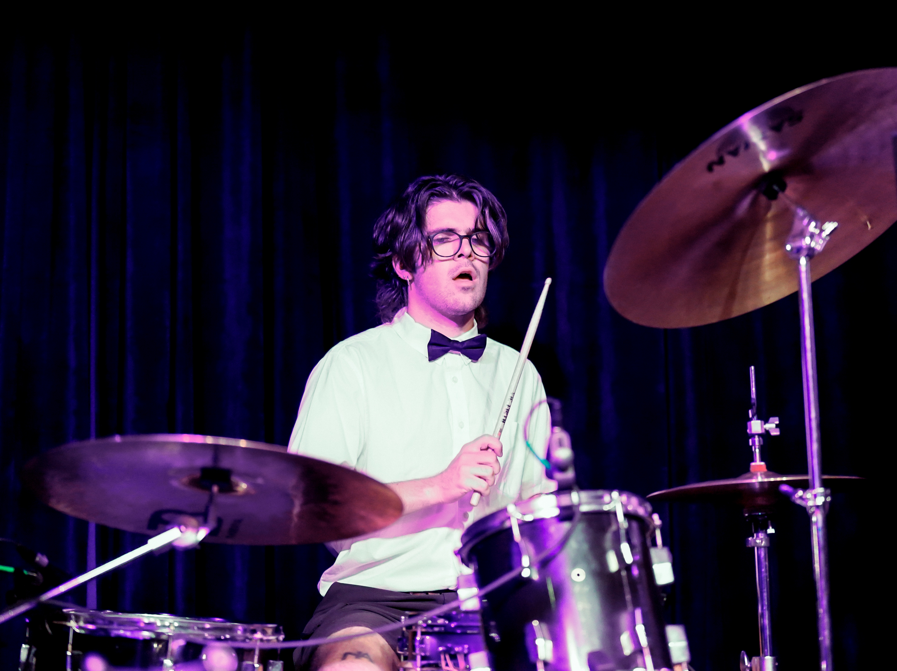
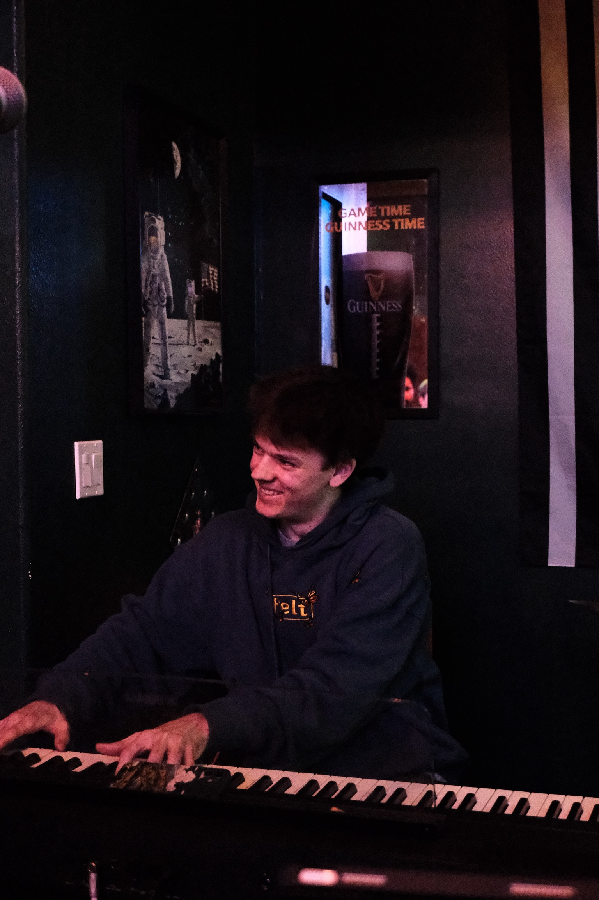
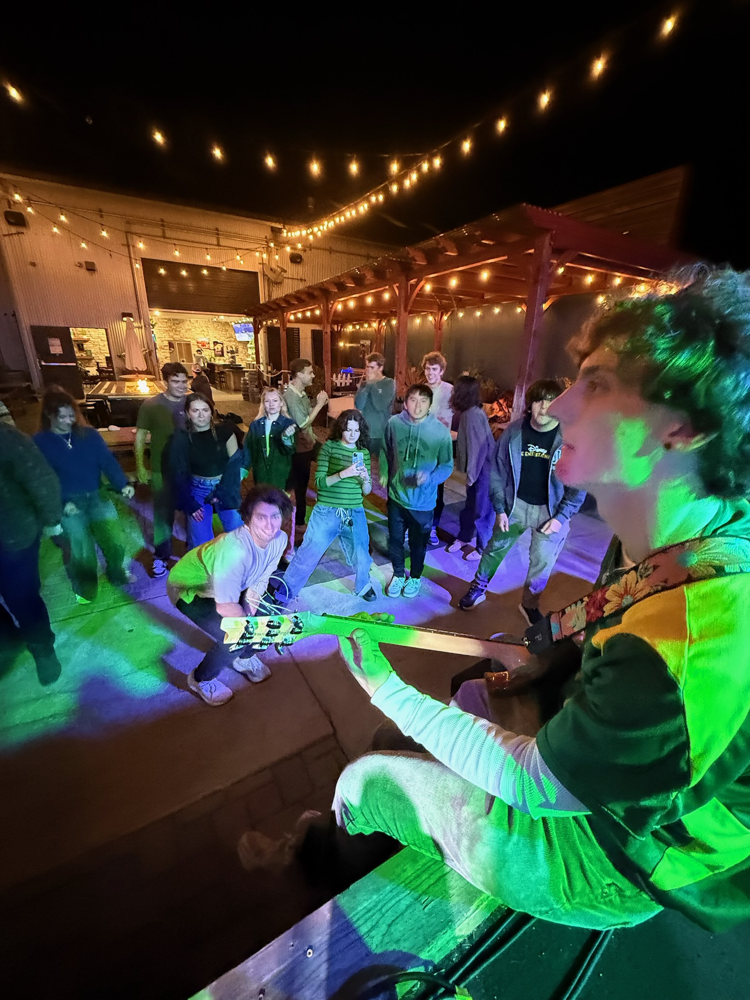
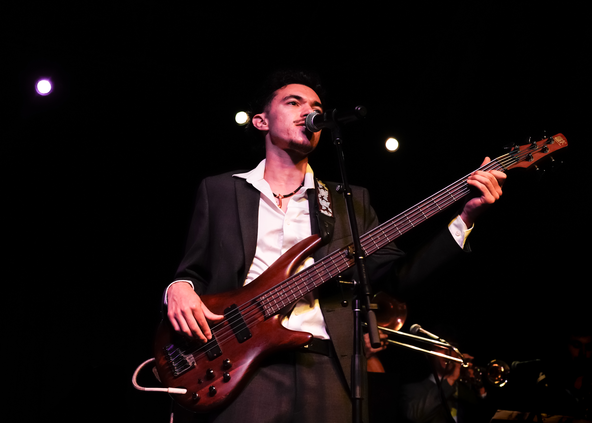
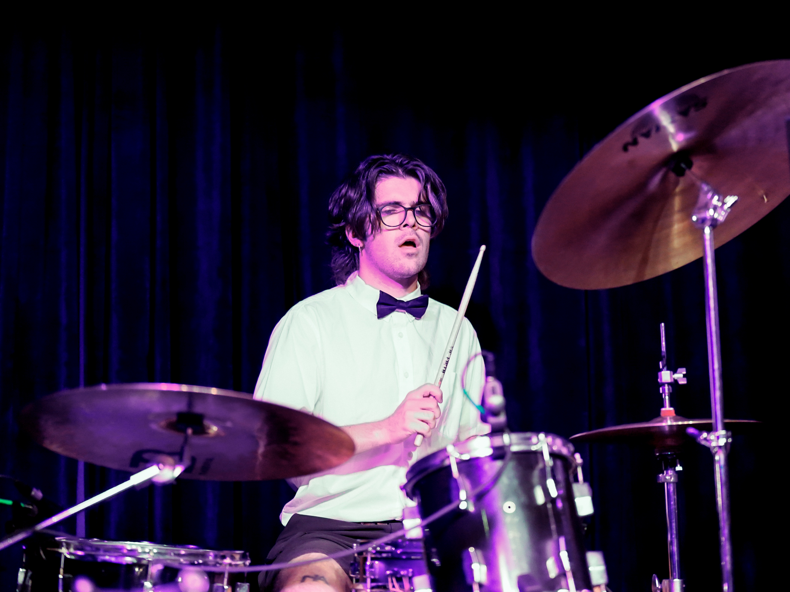
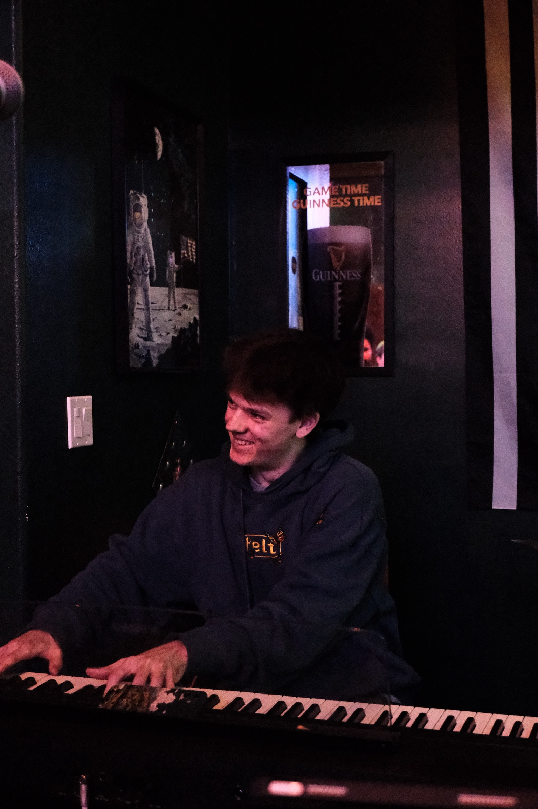
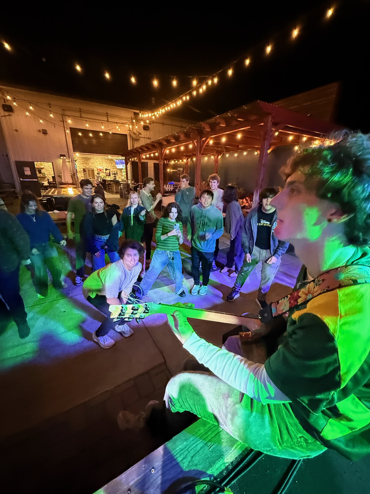
You can learn more about the band at thesweetspotsslo.com.